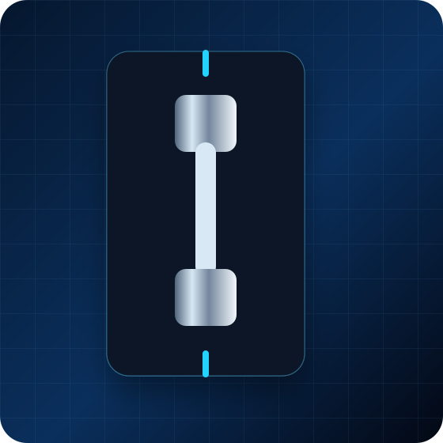
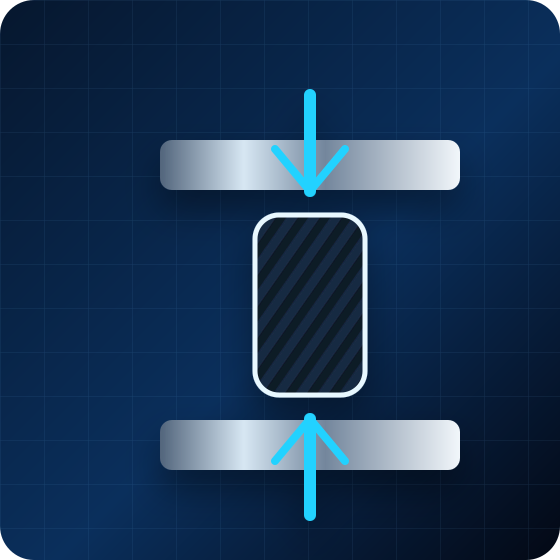
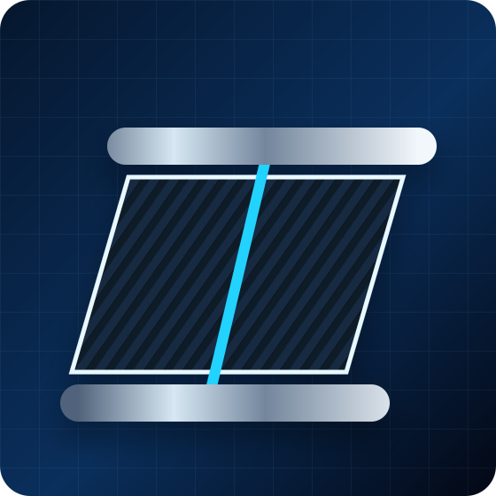
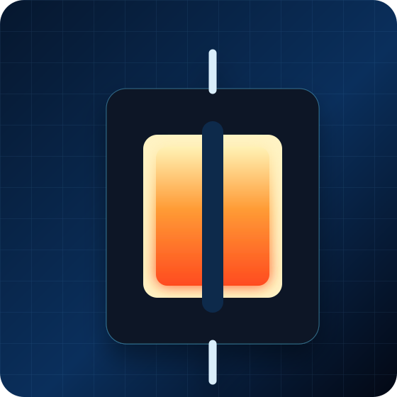

인장시험
섬유방향 및 적층각에 따른 탄성률, 인장강도, 파단 변형률을 평가합니다.
항공우주·방산 분야에 사용되는 복합재는 경량화, 내열성, 구조 안정성, 제조 품질 관리가 중요합니다. 디펜스카본은 시험 목적과 시편 조건을 우선 검토하여 적합한 시험 구성을 제안합니다.

섬유방향 및 적층각에 따른 탄성률, 인장강도, 파단 변형률을 평가합니다.

복합재 구조재의 압축강도, 좌굴 및 파손 양상을 확인합니다.

V-notched rail shear, Iosipescu 등 전단 물성 평가를 지원합니다.

온도 조건별 강도·강성 변화와 열환경 파손 특성을 평가합니다.
복합재 구조재는 경량화, 내열성, 강도 유지, 제조 품질이 동시에 요구됩니다. 디펜스카본은 시편 정보와 사용 환경을 검토하여 시험 항목, 온도 조건, 결과물 형식을 목적에 맞게 구성합니다.

국방·항공우주, 복합재 압력용기, 모빌리티·에너지 분야의 시험평가를 지원합니다.

항공기 구조재, 발사체·추진계 부품, 방산 복합재 부품 평가

필라멘트 와인딩 구조, 라이너 적용 구조, 파손 특성 확인

오토클레이브, 프리프레그, 브레이딩 기반 시편 및 부품 평가
시험 전 재료, 시편 형상, 장비 조건, 고객 요구사항을 확인한 뒤 적용 규격을 협의합니다.
시험 항목, 적용 규격, 온도 조건, 필요한 결과물 형식을 함께 보내주세요.